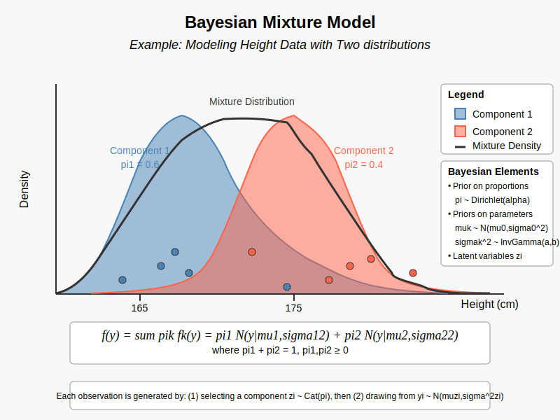

Intuitional Description#
Bayesian mixture models are widely used in statistics to model data where observations come from a “mixture” of two or more different distributions.
Graphical Summary#

Key Formula#
In a mixture model, we assume that the observed data are generated from a weighted sum of \(K\) different distributions, where each distribution corresponds to a different “component” in the mixture. The probability density function (PDF) of a mixture model can be written as:
Where:
\(f(y)\) is the overall probability density function for observation \(y\)
\(K\) is the number of component distributions (subpopulations)
\(\pi_k\) is the mixture weight for the \(k\)-th component (with \(\sum_{k=1}^{K} \pi_k = 1\))
\(f_k\) is the probability density function of the \(k\)-th continuous distribution, or probability mass functions if they are \(k\) discrete contributions
Technical Details#
Component Densities and Mixture Proportions#
This is called a mixture distribution (or mixture model, or just mixture) with \(K\) components. (Sometimes it is called a finite mixture because one can also further generalize the ideas to an uncountably infinite number of components!)
The \(f_1,…,f_K\) are called the component densities (or component distributions).
The \(\pi_1,…,\pi_K\) are called the mixture proportions, where \(\pi_k \geq 0\) and \(\sum_{k=1}^K \pi_k=1\).
Mixture of normal distributions#
In the case of a mixture of normal distributions, the individual components can be described by normal distributions with means \(\mu_k\) and variances \(\sigma_k^2\). The overall mixture density is then:
Where:
\(\mathcal{N}(y_i | \mu_k, \sigma_k^2)\) is the probability density function of the normal distribution for the \(k\)-th component, with mean \(\mu_k\) and variance \(\sigma_k^2\).
Example#
In this example, we’ll demonstrate a Bayesian mixture model using height measurements from two subpopulations, likely representing females and males.
# Clear the environment
rm(list = ls())
Let’s create a small dataset with 10 observations: 5 from the first distribution (likely females) and 5 from the second distribution (likely males), with true mixture proportions of 0.6 and 0.4.
# True parameters
mu1 <- 165 # Mean height for component 1 (likely females)
sigma1 <- 4 # SD for component 1
mu2 <- 175 # Mean height for component 2 (likely males)
sigma2 <- 5 # SD for component 2
pi1 <- 0.6 # Mixture proportion for component 1
pi2 <- 0.4 # Mixture proportion for component 2
# Generate 5 observations from each component
n1 <- 5
n2 <- 5
heights1 <- rnorm(n1, mu1, sigma1)
heights2 <- rnorm(n2, mu2, sigma2)
# Combine data (without labels)
heights <- c(heights1, heights2)
N <- length(heights)
# Print the heights
cat("Observed heights (in cm):\n")
print(round(heights, 1))
# True component membership (unknown in real applications)
true_components <- c(rep(1, n1), rep(2, n2))
Observed heights (in cm):
[1] 168.8 163.3 157.1 162.8 161.1 176.8 173.2 179.4 173.8 168.6
# After the code you provided, add this to plot the distributions:
# Create a range of x values for plotting
x <- seq(min(heights) - 10, max(heights) + 10, length.out = 1000)
# Calculate the density values
density1 <- pi1 * dnorm(x, mu1, sigma1) # Component 1 (weighted)
density2 <- pi2 * dnorm(x, mu2, sigma2) # Component 2 (weighted)
mixture_density <- density1 + density2 # Mixture density
# Create the plot
plot(x, mixture_density, type = "l", lwd = 2, col = "black",
main = "Mixture Model Distribution",
xlab = "Height (cm)",
ylab = "Density",
ylim = c(0, max(mixture_density) * 1.1))
# Add component densities
lines(x, density1, col = "skyblue", lwd = 2, lty = 2)
lines(x, density2, col = "salmon", lwd = 2, lty = 2)
# Add a legend
legend("topright",
legend = c("Mixture Density", "Component 1", "Component 2"),
col = c("black", "skyblue", "salmon"),
lwd = 2,
lty = c(1, 2, 2))
{kind=link}